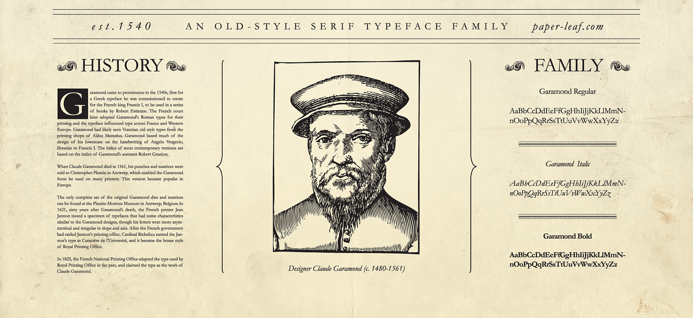

Garamond


Caja Baja
a b c d e f g h i j k l m n ñ o p q r s t u w x y z
Altura de x moderada, modulación del trazo contrastada y ojo medio equilibrado para lectura fluida.
Caja Alta
Caja Baja
Altura de x moderada, modulación del trazo contrastada y ojo medio equilibrado para lectura fluida.
Caja Alta
Modulación marcada, trazos contrastados y proporciones estilizadas que aportan elegancia y jerarquía visual.

La tipografía Garamond tiene su origen en el Renacimiento francés, específicamente a principios del siglo XVI. Francia estaba emergiendo como un centro cultural y editorial destacado en Europa, y la imprenta se estaba consolidando tras su invención en Alemania un siglo antes. Durante este tiempo, los impresores franceses buscaban una tipografía que fuera más legible y elegante para el creciente mercado editorial.
Garamond surge en este contexto como una tipografía inspirada en las formas de escritura caligráfica, influenciada a su vez por los estilos tipográficos que habían desarrollado italianos como Francesco Griffo y Aldo Manuzio en Venecia. Su diseño en particular fue adoptado y popularizado por impresores parisinos, volviéndose un símbolo del refinamiento tipográfico francés.